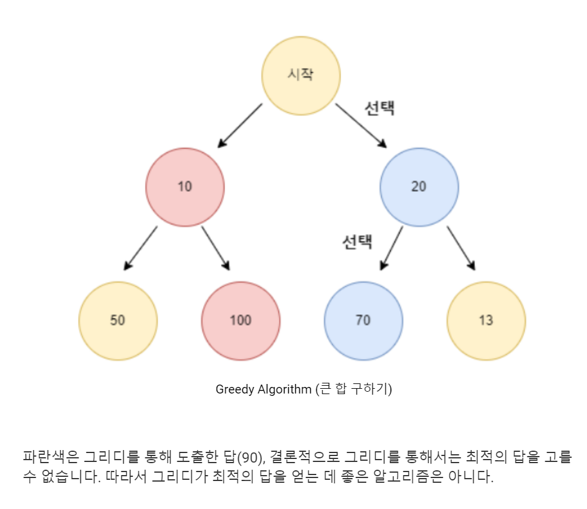

MENU
알고리즘 : 그리디 알고리즘
태스크 스케쥴링
태스크들이 가장 많이 겹치는 시간
스위핑을 이용해서 처리하면 된다.
태스크의 시작이벤트와 종료이벤트를 모두 시간 기준으로 정렬한 뒤에 시작이벤트에서는 카운트를 증가, 종료 이벤트에서는 카운트를 감소시킨다.이 카운트가 겹치는 태스크의 갯수이므로, 카운트가 가장 높았을때의 값과 그때의 시간이 원하는 답이 된다.
시간복잡도는 정렬에 드는 O(nlogn)에 바운드된다.
우선순위 큐를 사용해서 푸는 경우도 있는데, 그냥 다 정렬해놓고 처리하는 방법과 같은 원리이고, 구현상 이득이 없다.
시작시간과 종료시간의 범위가 작을 경우에는, 그냥 각 시간별로 이벤트의 갯수를 저장하는 배열을 만들고 (시작 이벤트는 +1, 종료이벤트는 -1), 누적합배열을 구한 후에 최댓값으로 계산하는 방법도 있다.
구간 업데이트와 최댓값 쿼리를, 누적합을 이용해서 처리해준것이라고 생각해도 되고.. 그냥 앞에 설명한 정렬해서 푸는 방법을 카운팅 소트로 처리했다고 생각해도 된다. 범위 m이 작을 경우에는 O(n+m) 이 되어서 조금 더 빨라질 수도 있다. 범위가 크면, 좌표 압축까지 쓸수도 있지만 그러면 결국 정렬이 필요해지니 이득이 없고..

Exchange argument
주어진 아이템들을 하나씩 선택해서 처리할때,
그 때의 최적 선택 순서를 찾는 방법에 관한 문제
를 풀 때 사용할수 있는 방법이다.
구체적인 문제 예시들로는 이런것들이 있다
아이템을 선택할때 조건에 맞는 아이템들만 선택할수 있다 → 모든 아이템을 선택할수 있는 방법이
존재하는가?
아이템을 선택할때 조건에 맞는 아이템들만 선택할수 있다 → 가장 많이 선택할수 있는 아이템의 갯수는?
그때의 방법은?
아이템을 선택할때마다 점수/페널티를 얻는다 → 점수/페널티의 총합의 최대/최소값은? 그때의 방법은?
이러한 문제에 대해서 어떤 그리디한 풀이가 있다면,
'남은 아이템 중에서 가장 XXX 한 것을 먼저 선택한다' 가 될것이다.
전체 순서를 찾아야 하는 문제라면,
XXX한 순서대로 아이템들을 모두 정렬한 것이 답이 될것이다.
원래 Exchange argument는 이러한 그리디한 풀이의 정당성(왜 이 풀이가 최적해를 찾아주는지)을
증명하는 방법중의 한가지이다.
어떤 그리디한 방식으로 찾은 순서가 최적임을 Exchange arguments 방식으로 증명하는 것은,
어떤 옵티멀한 솔루션이 있다고 가정했을때, 이것을 그리디한 방식으로 도출되는 답으로
변형하더라도 더 나빠지지 않는다는 것을 보이는 방식이다. 옵티멀 솔루션에서 그리디 알고리즘에서
도출된 답으로 답을 변형하는 과정은,
두개의 아이템의 순서를 스왑하는 것을 반복하는 방식으로
이루어지고, 매 스왑마다 답이 더 나빠지지 않으므로,
전체 과정을 다 거쳐도 답이 나빠지지 않고
여전히 옵티멀이라는 것을 증명하게 된다.
하지만 이제 역으로,
특정 순서대로 선택한다는 그리디한 풀이가 먼저 주어져있을때 그 정당성을 증명하는게 아니라,
기준이 뭔지는 모르겠지만 하여튼 그 기준대로 선택하면 답이 되는 그리디한
해답이 존재한다고 가정하면, 그 기준이 과연 무엇일지를 생각해보자.
어떤 기준으로 선택한다면
Exchange arguments 방식으로 정당성이 증명될수 있을지를 생각해 본다는 뜻이다.
사실 말이 복잡한데 방법은 간단하다. 그냥 두개의 아이템만 있는 경우를 생각해보고,
둘중 에서 어느쪽을 먼저 선택해야지 더 좋은 답을 얻을수 있는지를 생각해본다.
구체적으로는 1번을 먼저 처리하고 2번을 처리했을때와, 2번을 먼저 처리하고
1번을 처리했을때의 스코어를 계산해보고, 1번→2번의 스코어가 2번→1번의 스코어보다 높아지는
컨디션을 일반화해서 두 아이템을 비교하는 기준으로 사용하면 된다.
이렇게 해서 찾은 이 비교기준이 total ordering을 만족시키게 된다면,
이제 '모든 아이템을 이 기준으로 정렬해서 그 순서대로 처리한다'는
그리디 해답은 자동적으로 올바른 풀이가 된다.
유형들
사실 수많은 그리디 알고리즘이 이 방식을 사용해서 도출될 수 있긴 하다. 하지만,
굳이 이 방식으로 생각해보기도 전에 이미 너무 자명하게 떠오르는 문제들도 많다.
예를 들면, 주어진 숫자들을 이어붙여서 가장 큰 수를 만드는 문제.
Exchange argument를 굳이 쓰지 않고서도, 큰 숫자부터 앞자리에 붙이면 된다는 것을
당연스럽게 알 수 있다.
비교 기준으로 삼을만한것 자체가 몇가지 없다든가,
아니면 굳이 증명을 안해도 직관적으로 이 순서로 정렬하면 되겠지 하는 느낌이 온다든가
하는 문제들은 exchange argument 없이도 그냥 떠오르는 순서로 정렬해보고 딱히 반례가
안떠오르면 제출 후 proof by AC로 끝내는 경우도 많다
결국 exchange argument가 힘을 받는 문제는 비교 기준으로 삼을만한 후보도 다양하고,
그중에서 정답에 해당하는 비교 기준이 직관적으로는 떠올리기 힘든 것들이다.
(a_i/b_i) 를 기준으로 정렬하게 되는 문제들
소방서의 고민
현재의 페널티가 t인 상황에서 i번 아이템 (a_i, b_i)를 선택하면, t*a_i+b_i 만큼 페널티가 증가한다.
f(i)=b_i/a_i 가 작은 순서대로 선택하는 것이 최적이다.
구두 수선공
현재의 시간이 t인 상황에서 i번 아이템 (T_i, S_i)를 선택하면, 페널티는 t*S_i만큼 증가,
t는 T_i만큼 증가.
f(i)=T_i/S_i 가 작은 순서대로 선택하는 것이 최적이다.
13448
구두 수선공과 조건은 마찬가지. 현재의 시간이 t인 상황에서 i번 아이템 (P_i, R_i)를 선택하면,
페널티는 t*P_i만큼 증가, t는 R_i만큼 증가하므로, f(i)=R_i/P_i 가 작은 순서대로 선택하는 것이 최적이다.
다만 모두 선택할수 있는것이 아니고, 시간내에 허용되는 만큼만 선택할수 있는 문제이다.
어떠어떠한 아이템을 선택하기로 했을 경우에 그 아이템들을 어떤 순서로 선택해야 할지는 위에서 구해서 알고 있으므로, '어떠어떠한 아이템을 선택할지'
만 냅색 DP를 통해서 풀어내면 된다.
점수가 깎인 뒤 회복되는 유형
i번째 아이템은 (a_i, b_i) 로 나타내진다.
i번째 아이템을 선택하면 총점이 a_i만큼 감소되고, 다시 b_i만큼 증가한다.
총점이 가장 작아졌을 때의 값을 최대화시키는 문제.
우선 정답만 세줄요약하면
아이템을 두 종류로 나눈다.
증가아이템: 처리후에 최종적으로 총점이 증가하는 아이템, 즉 a_i ⇐ b_i 인 아이템.
감소아이템: 처리후에 최종적으로 총점이 감소하는 아이템, 즉 a_i > b_i 인 아이템.
증가아이템을 모두 먼저 선택하고, 그 뒤에 감소아이템들을 선택해야 한다
증가아이템은 a_i가 작은것부터 선택하면 된다
감소아이템은 b_i가 큰것부터 선택하는 것이다
좀더 설명하면
증가아이템의 순서는 직관적이다. 사용가능한 것부터 선택하면 된다.
a_i가 작은것부터 선택하면 그렇게 된다
감소아이템을 고르는 기준은 직관적이지는 않다. 직관적으로 생각나는 아이디어들이 있지만 다 오답이다.
처음 선택에 필요한 총점(=a_i)가 작은것부터 사용하면?
(실패) 반례: 총점 10, 남은 아이템 (9,7), (5,1)일때, (9,7)을 먼저 선택해야만 한다
선택했을때 총점 감소가 작은것부터 사용하면? 즉, (a_i-b_i)가 작은것부터 사용하면?
(실패) 반례: 총점 10, 남은 아이템 (5,3), (9,5)일때, (9,5)을 먼저 선택해야만 한다
exchange argument로 접근하자. 현재 총점이 x이고, (a1,b1)과 (a2,b2)가 남아있다고 생각하자
1번,2번 순으로 처리가능하려면 x - a1 + b1 >= a2 이어야 한다
바꿔쓰면 b1 >= a1+a2-x
2번,1번 순으로 처리가능하려면 x - a2 + b2 >= a1 이어야 한다
바꿔쓰면 b2 >= a1+a2-x
b1>b2이라고 가정하면,
1번2번 순서로 불가능하면 2번1번 순서로도 불가능하다
1번2번 순서로는 가능해도, 2번1번 순서로는 불가능할수도 있다.
그러므로 1번2번 순서로 시도해야 한다.
선택 순서에 제약이 있는 경우 (트리 형태)
위에서의 기본 유형은, 아이템을 선택하는 순서에는 딱히 제약이 없었다. 그래서 exchange argument로 최적 아이템을 찾으면,
그걸 가장 먼저 선택하면 되었다.
A 아이템은 반드시 B 아이템 보다 나중에 선택해야 한다는 형식의 제약이 주어질 수도 있다. 제너럴하게는 DAG 형태로 표현되겠지만,
그런 문제는 본적이 아직 없고 (어떻게 풀어야할지도 모르고), 트리 형태로 제약이 주어지는 경우는 굉장히 독특한 풀이법이 있다.
이 방법으로 풀어야 하는 문제들이 가끔 나오는데,
이 방법 자체에 대한 자세한 튜토리얼은 본적이 없다.. 1763 에 대해서 아이디어 스케치 정도의 요약된 풀이를 써놓은 블로그가 몇개 정도 있었는데,
여기서부터 전체 풀이를 이해하는게 꽤 들었다.
그래서 여기에서 주어지는 문제 유형은 이런것이다.
아이템들이 트리 노드마다 배치되어있다. 자식 노드의 아이템은, 그 부모 노드의 아이템을 이미 선택한 이후에만 선택 가능하다.
(첫번째로 선택해야 하는 아이템은 무조건 루트 노드의 아이템이 된다)
관련 문제
1763: {총비용}/{크기} 가 큰 순으로 선택해야 한다는 것을 exchange argument로 알아낼 수 있다. n이 작아서,
우선순위큐를 사용하지 않고 O(n^2)에 풀어도 돌아간다
18595: 점수가 깎인 뒤 회복되는 유형 을 트리 위에 얹은 형태.
9539: 점수가 깎인 뒤 회복되는 유형 을 트리 위에 얹은 형태.